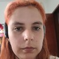

Summary

Education
- Control and Automation Engineer
2011-2016
Universidade Tecnológica Federal do Paraná
-
Master in science - photonics Engineer
2017-2019
Universidade Tecnológica Federal do Paraná
-
PHD in science - photonics Engineer
2019 -
Universidade Tecnológica Federal do Paraná
-
System analysis and development
2023 - 2025
Pontificia Universidade Católica do Paraná
Work experience
- 12 years in Foton (photonics Lab)
Skills
- Knowledgement: C, C#, C++, Java, POO, HTML, Javascript, PHP, Labview, Matlab, Office Package, frontend development
- Mathematics Olympiad Certificate
- Winner of the best student work competition
Hobbies
Contact